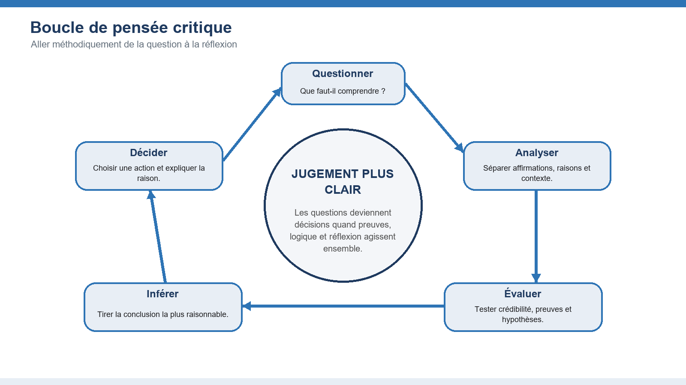
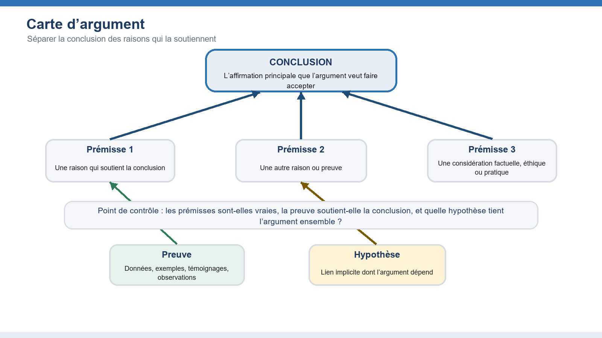
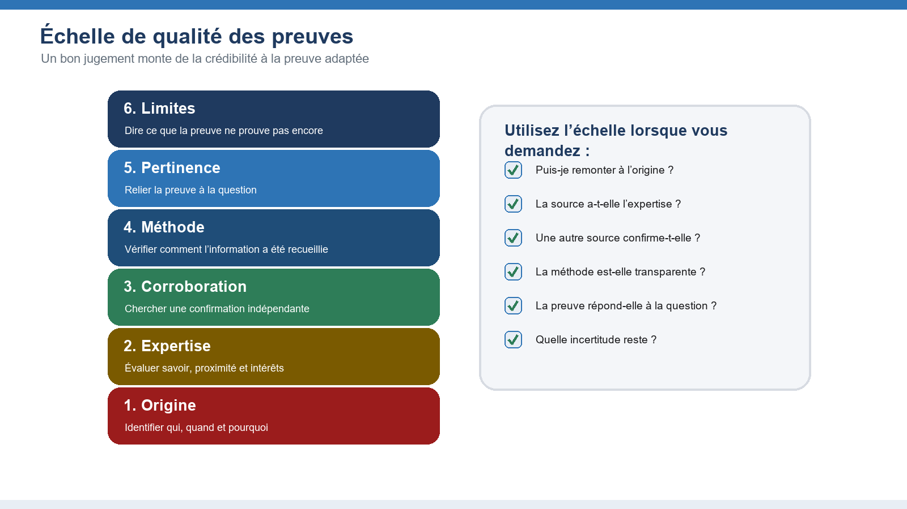
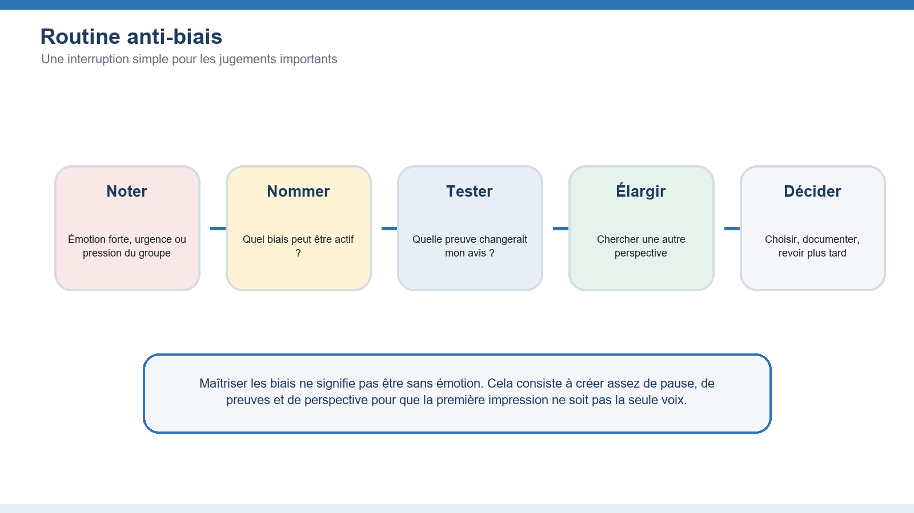
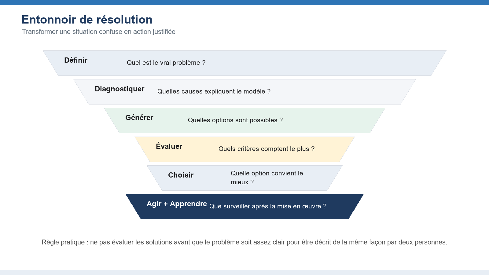
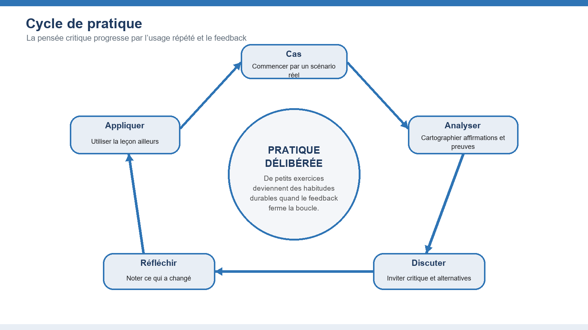

🧠 Pensée critique
Analyser, évaluer et décider avec confiance
Ce document compagnon développe le plan original de la compétence de pensée critique en un guide d’apprentissage pratique avec des explications, des exemples, des diagrammes, des activités et des questions de réflexion.
Commencez par l’état d’esprit de la pensée critique, puis apprenez à analyser les arguments, évaluer les preuves, maîtriser les biais, résoudre les problèmes et pratiquer la compétence jusqu’à ce qu’elle devienne une habitude.
1. Fondements de la pensée critique
Construire l’état d’esprit et le vocabulaire dont les apprenants ont besoin avant d’évaluer des informations complexes.

Domaines clés à maîtriser
Définition et importance
La pensée critique est un jugement discipliné. Elle combine curiosité, critères explicites, preuves, logique et humilité intellectuelle afin de décider ce qu’il faut croire ou faire. Sa valeur est pratique : elle aide à éviter les jugements précipités, à expliquer ses raisons et à prendre de meilleures décisions lorsque l’information est incomplète ou contestée.
Idées reçues courantes
La pensée critique n’est pas de la négativité, du débat pour le débat, ni une méfiance envers toutes les sources. Un penseur solide peut être sceptique sans être cynique, ouvert sans être crédule et décisif sans prétendre à une certitude supérieure à celle permise par les preuves.
Bénéfices personnels et professionnels
Dans la vie quotidienne, la pensée critique soutient de meilleurs choix financiers, des relations plus saines et une lecture plus prudente des médias. Au travail, elle améliore la planification, l’évaluation des risques, le diagnostic des problèmes, la collaboration et la communication, car les décisions peuvent être reliées à des raisons plutôt qu’à de simples préférences.
L’état d’esprit de la pensée critique
Cet état d’esprit comprend la curiosité, la patience, l’équité, le courage et la volonté de réviser son point de vue. Les apprenants s’entraînent à demander : Que sais-je ? Comment le sais-je ? Qu’est-ce que je suppose ? Que remarquerait une personne raisonnable qui n’est pas d’accord ?
Erreurs courantes à surveiller
- Prendre la confiance pour une preuve
- Passer aux solutions avant de clarifier la question
- Confondre critique et évaluation rigoureuse
Activités pratiques
- Écrivez une croyance que vous défendez fortement et listez les preuves qui la soutiennent.
- Identifiez une hypothèse derrière cette croyance et une preuve qui pourrait la remettre en question.
- Expliquez la différence entre être sceptique et être dismissif.
💬 Discussion — Module 1
Une question, un exemple vécu, un désaccord sur ce module ? Partagez-le ici, avec respect.
Règle de la communauté : on attaque les idées, jamais les personnes. Citez vos sources.
2. Identifier et analyser les arguments
Apprendre aux apprenants à voir la structure qui se cache sous le langage persuasif.

Domaines clés à maîtriser
Prémisses et conclusions
Un argument possède une conclusion, c’est-à-dire l’affirmation qu’il veut faire accepter, et des prémisses, c’est-à-dire les raisons données pour la soutenir. Les apprenants doivent reconnaître les mots indicateurs comme parce que, donc, puisque et par conséquent, mais aussi repérer les arguments lorsque ces mots sont absents.
Sophismes logiques
Les sophismes sont des modèles de raisonnement faible. Ils incluent l’attaque ad hominem, l’homme de paille, le faux dilemme, la généralisation hâtive, la pente glissante et l’appel à une autorité non pertinente. Nommer un sophisme n’est utile que si l’apprenant peut expliquer où le raisonnement échoue.
Évaluation d’un argument
Une évaluation utile pose trois questions : les prémisses sont-elles acceptables ? Soutiennent-elles la conclusion ? Existe-t-il des hypothèses cachées ou des contre-exemples ? Cela sépare la force émotionnelle d’un message de la qualité de son raisonnement.
Raisonnement déductif et inductif
Le raisonnement déductif vise la certitude lorsque les prémisses sont vraies et que la forme est valide. Le raisonnement inductif vise la probabilité, le modèle ou la meilleure explication. La plupart des décisions réelles utilisent l’induction ; les apprenants doivent donc juger la force, pas seulement la correction.
Erreurs courantes à surveiller
- Réagir au ton plutôt qu’à la structure
- Rejeter une conclusion parce qu’une prémisse mineure est faible
- Supposer que toute phrase persuasive est un argument
Activités pratiques
- Choisissez un court article d’opinion et soulignez la conclusion principale.
- Listez chaque prémisse avec vos propres mots et tracez les liens entre les raisons et la conclusion.
- Identifiez une objection possible et décidez si l’argument tient encore.
💬 Discussion — Module 2
Une question, un exemple vécu, un désaccord sur ce module ? Partagez-le ici, avec respect.
Règle de la communauté : on attaque les idées, jamais les personnes. Citez vos sources.
3. Évaluer les preuves et les sources
Aider les apprenants à décider quel degré de confiance mérite une affirmation.

Domaines clés à maîtriser
Évaluation des sources
Une source doit être évaluée selon son autorité, son exactitude, son objectif, son actualité et sa transparence. Les apprenants doivent demander qui a créé l’information, quelle expertise cette personne possède, quels intérêts sont présents, si l’affirmation peut être retracée et si la source distingue les faits de l’interprétation.
Reconnaissance des biais
Toutes les sources ont des perspectives, des priorités et des limites. Le biais ne rend pas automatiquement une source inutile, mais il influence le poids à lui accorder. L’essentiel est d’identifier la direction, le degré et la pertinence du biais.
Qualité des preuves
Une preuve solide est pertinente, suffisante, exacte, représentative et obtenue par une méthode fiable. Un exemple frappant peut clarifier une idée, mais il ne doit pas être traité comme preuve d’un modèle général sans appui plus large.
Sources primaires et secondaires
Les sources primaires fournissent des preuves directes : données originales, entretiens, dossiers ou observations. Les sources secondaires interprètent ou résument les matériaux primaires. Les apprenants compétents utilisent les deux, mais savent quand vérifier une interprétation contre les preuves originales.
Erreurs courantes à surveiller
- Faire confiance à une présentation soignée plutôt qu’à des méthodes transparentes
- Utiliser une information ancienne pour une question qui évolue vite
- Traiter un exemple isolé comme un modèle
Activités pratiques
- Comparez deux sources qui formulent la même affirmation et notez leurs accords et divergences.
- Remontez une statistique jusqu’à sa source originale.
- Classez une preuve comme forte, modérée, faible ou insuffisante et justifiez votre classement.
💬 Discussion — Module 3
Une question, un exemple vécu, un désaccord sur ce module ? Partagez-le ici, avec respect.
Règle de la communauté : on attaque les idées, jamais les personnes. Citez vos sources.
4. Reconnaître et dépasser les biais
Donner aux apprenants des outils pratiques pour réduire les erreurs prévisibles de jugement.

Domaines clés à maîtriser
Biais cognitifs
Les biais cognitifs sont des raccourcis mentaux utiles dans des situations routinières, mais trompeurs lorsque les enjeux, la complexité ou l’incertitude sont élevés. Ils influencent ce que nous remarquons, retenons, croyons et ignorons.
Biais de confirmation
Le biais de confirmation est la tendance à chercher, interpréter et mémoriser les informations qui soutiennent ce que nous croyons déjà. Il est puissant parce qu’il peut ressembler à une recherche sérieuse tout en filtrant discrètement les preuves contraires.
Stratégies d’atténuation
Le biais se réduit par des routines, pas seulement par la volonté. Les stratégies utiles comprennent ralentir, nommer le biais possible, chercher des preuves contraires, utiliser des listes de contrôle, comparer les taux de base, inviter la dissidence et documenter les raisons d’une décision avant d’en connaître le résultat.
Prise de perspective
La prise de perspective consiste à voir une situation à travers les objectifs, contraintes et informations d’une autre personne. Elle n’exige pas l’accord ; elle améliore la précision et l’équité de l’analyse.
Erreurs courantes à surveiller
- Supposer que les biais ne touchent que les autres
- Consulter une seule source opposée et considérer la recherche terminée
- Confondre inconfort et faiblesse des preuves
Activités pratiques
- Décrivez une décision récente et identifiez le biais qui aurait pu l’influencer.
- Trouvez une source crédible qui remet en question votre première opinion.
- Défendez la position opposée pendant trois minutes avant de revenir à votre propre point de vue.
💬 Discussion — Module 4
Une question, un exemple vécu, un désaccord sur ce module ? Partagez-le ici, avec respect.
Règle de la communauté : on attaque les idées, jamais les personnes. Citez vos sources.
5. Résoudre les problèmes avec la pensée critique
Appliquer l’analyse, les preuves et le raisonnement à des problèmes réels et complexes.

Domaines clés à maîtriser
Définition du problème
Un énoncé de problème doit nommer l’écart entre l’état actuel et l’état souhaité, identifier les personnes touchées et décrire les preuves montrant que le problème existe. Un énoncé faible saute directement vers une solution préférée.
Évaluation des solutions
Les solutions doivent être comparées à des critères explicites comme l’impact, la faisabilité, le coût, le risque, l’équité, la réversibilité et le temps. Les apprenants doivent éviter de choisir la première option viable lorsque de meilleures alternatives n’ont pas été examinées.
Cadres de décision
Les cadres comme les matrices de décision, l’analyse coûts-bénéfices, les listes avantages-inconvénients, les outils de cause racine et les prémortems rendent le raisonnement visible. L’objectif n’est pas de mécaniser les décisions, mais d’exposer les compromis pour les discuter.
Analyse des causes racines
L’analyse des causes racines va au-delà des symptômes visibles. Les techniques comme les cinq pourquoi, les diagrammes causes-effets et la cartographie des processus aident à distinguer un déclencheur de la condition plus profonde qui permet au problème de continuer.
Erreurs courantes à surveiller
- Résoudre le symptôme plutôt que la cause
- Choisir les critères après avoir sélectionné l’option préférée
- Ignorer la mise en œuvre et le suivi
Activités pratiques
- Réécrivez un problème vague comme un écart précis entre l’état actuel et l’état souhaité.
- Générez au moins trois solutions possibles avant d’en évaluer une.
- Utilisez trois critères pour comparer les options et expliquer le compromis de votre recommandation finale.
💬 Discussion — Module 5
Une question, un exemple vécu, un désaccord sur ce module ? Partagez-le ici, avec respect.
Règle de la communauté : on attaque les idées, jamais les personnes. Citez vos sources.
6. Pratiquer la pensée critique
Transformer les concepts en habitudes durables grâce aux exercices, au feedback et à la réflexion.

Domaines clés à maîtriser
Études de cas
Les études de cas permettent de s’exercer avec une ambiguïté réaliste. Un bon cas contient des informations incomplètes, des valeurs concurrentes, une pression temporelle et des conséquences. Les apprenants doivent identifier les faits, les incertitudes, les parties prenantes, les hypothèses et les options de décision.
Exercices pratiques
Les exercices doivent être assez courts pour être répétés et assez précis pour produire du feedback. Les exemples incluent la cartographie d’arguments, le classement de sources, le repérage de sophismes, les journaux de biais, les matrices de décision et les revues après action.
Applications réelles
La pensée critique devient précieuse lorsque les apprenants l’utilisent hors de la classe : évaluer l’actualité, préparer une proposition, résoudre un problème professionnel, interpréter des données ou prendre une décision personnelle à long terme.
Amélioration continue
La progression exige de la réflexion. Les apprenants doivent comparer leurs prédictions aux résultats, consigner les leçons apprises, demander des critiques et créer des listes de contrôle personnelles pour les décisions récurrentes.
Erreurs courantes à surveiller
- Ne pratiquer que des définitions abstraites
- Éviter le feedback parce que la critique semble personnelle
- Ne pas transférer la compétence aux situations réelles
Activités pratiques
- Tenez un journal de décision pendant une semaine avec l’affirmation, la preuve, l’hypothèse, la décision et le résultat.
- Faites une courte revue entre pairs où l’autre apprenant remet en question votre raisonnement, pas votre personne.
- Choisissez une habitude de pensée critique à pratiquer chaque jour pendant le mois à venir.
💬 Discussion — Module 6
Une question, un exemple vécu, un désaccord sur ce module ? Partagez-le ici, avec respect.
Règle de la communauté : on attaque les idées, jamais les personnes. Citez vos sources.
Exercices pratiques de synthèse
Ces exercices intègrent les six modules et peuvent servir de devoirs, d’activités d’atelier ou de révision finale.
Analyse d’argument
Sélectionnez un court article, discours, message publicitaire ou projet professionnel. Identifiez la conclusion, listez les prémisses, marquez les hypothèses et évaluez si les preuves justifient la conclusion.
Évaluation de sources
Choisissez une affirmation actuelle et comparez au moins trois sources. Classez chaque source selon l’autorité, la transparence, la qualité des preuves et la pertinence pour la question.
Identification des biais
Revenez sur une décision personnelle ou collective. Identifiez où le biais de confirmation, l’ancrage, la disponibilité ou la pression du groupe a pu orienter le résultat.
Défi de résolution de problème
Utilisez l’entonnoir de résolution de problème pour définir un problème réel, diagnostiquer les causes probables, générer des options, les comparer avec des critères explicites et recommander une action.
Grille de performance de l’apprenant
Utilisez cette grille pour donner un feedback sur le processus de raisonnement, et pas seulement sur l’accord avec la conclusion de l’instructeur.
Références et ressources
- Foundation for Critical Thinking - www.criticalthinking.org
- Bloom's Taxonomy of Critical Thinking Skills
- Paul, R., and Elder, L. (2008). The Miniature Guide to Critical Thinking Concepts and Tools.
- Facione, P. A. (2015). Critical Thinking: What It Is and Why It Counts.
- Brookfield, S. D., and Preskill, S. (2005). Discussion as a Way of Teaching.
- Note de droit d’auteur : Ce guide traduit a été préparé comme document compagnon du tutoriel de pensée critique de Lojik360 University.